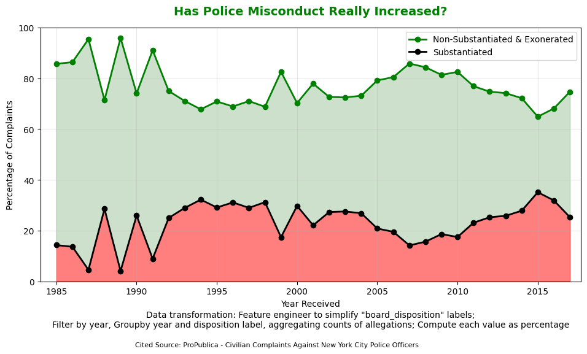
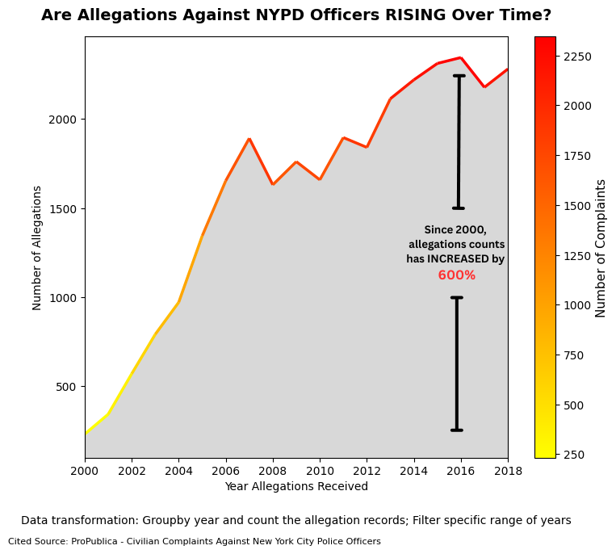

Proposition: The incidence of NYPD officers' misconduct has not increased over time.
Visualization 1 — Supporting the Proposition

Design Decisions and Rationale:
-
1. Using a line plot to describe a trend over time
Rationale: I want to demonstrate a visualization of how the percentage of allegations with “substantiated” dispositions and with “unsubstantiated & exonerated” dispositions changes over time. For my data model, my X-axis represents years with allegations received (Quantitative Interval / Temporal), and my Y-axis represents the percentages of allegations with different types of dispositions (Quantitative Ratio). I used color to encode types of disposition (Categorical Nominal) and a line plot as the visual mark choice because it effectively showcases trends over time and helps the audience identify key takeaways.
Score: 2 → I follow guidance from the design space, effectiveness, and expressiveness, ensuring not to misrepresent the information using the wrong visual mark, as suggested in the design space lecture.
How Is It Persuasive: Using a line plot to represent temporal data on the X-axis and quantitative data on the Y-axis is an effective choice in the combinatorial design space.
What Worked/Didn't Work Well: It works well because the line plot clearly conveys the contrast between substantiated and non-substantiated allegations over time, allowing viewers to see the stability or decline of substantiated cases at a glance.
Other Alternatives Considered: I tried using a bar chart and a pie chart, but bar charts produce redundant gains and pie charts only show aggregated results, not trends over time.
Why Settle Down With This Design: When using a bar chart to showcase how the number of allegations changes over time, you will end up seeing a lot of bars with the same length, which contain a lot more redundant gains than filtering interference, indicating that the audience might need to spend more time to observe the same pattern from a line plot.
-
2. Trimming off the year data from 2018 and beyond
Rationale: The data for years after 2018 show an increasing percentage of allegations with “substantiated” disposition. To support the proposition that substantiated misconduct has not increased, I filtered these years out.
Score: -2 → Selecting a subset of data is intentionally deceptive to match the argument being supported.
How Is It Persuasive: Excluding the years after 2018 creates a false sense of stability or decline in confirmed misconduct, persuading the audience that the proportion of substantiated cases remains consistently low.
What Worked/Didn't Work Well: It works well by avoiding the sharp upward slope in later years, making the argument more compelling at a glance.
Other Alternatives Considered: Showing the full data with no filtering.
Why Settle Down With This Design: I think the filtered version can strongly persuade the audience because it realistically shows that the percentage of allegations with “substantiated” disposition can sometimes increase, but overall, it decreases or remains in low percentages, whereas adding the remaining data part will show that the percentage steadily increases, which is no help in convincing audience to support the argument.
-
3. Using shading colors under lines
Rationale: The shading area showcases the area magnitude visual channel. Different colors help separate allegations by disposition type.
Score: 2 → Using shading effectively signifies trends while remaining earnest.
How Is It Persuasive: he use of green to represent “Non-Substantiated & Exonerated” implies that most cases are resolved favorably for officers, suggesting reassurance or stability. Meanwhile, the smaller red area representing “Substantiated” dispositions visually minimizes the perceived scale of confirmed misconduct.
What Worked/Didn't Work Well: Shading enhances visual comparison, but overlapping areas could be misinterpreted as a stacked line chart.
Other Alternatives Considered: Using different shading colors or none at all.
Why Settle Down With This Design: I settle down with the shading color combination of green and red because the complementary color set, along with lighter color/luminance with green and darker color/luminance, is not only excellent in creating color contrast, but they are also color-blind friendly. Red and green could still be perceived as different colors by different types of color-blind individuals, even by individuals with achromatopsia, who can only see the world with a shade of gray. They can identify that there are two types of disposition because they can perceive the lower luminance of gray (light green) and the higher luminance of gray (dark red).
-
4. Using Transformation Description and Cited Sources
Rationale: To show transparency, I included data transformation steps and cited sources, explaining any pre-filtering and calculations.
Score: 1.5 → Strengthens credibility and professionalism.
How Is It Persuasive: Including source and transformation notes builds trust and supports the argument objectively.
What Worked/Didn't Work Well: Providing the source and transformation explanation makes the visualization appear objective and transparent
Other Alternatives Considered: Not including the transformation note.
Why Settle Down With This Design: Including the transformation and source details demonstrates the validity of the data supporting the argument.
Data Transformation:
- Feature Engineering: Simplified the “board_disposition” attribute values by grouping multiple detailed “Substantiated” categories into a single “Substantiated” label. All other labels were grouped into a single “Non-Substantiated_Exonerated” category. I named it “disposition_simplified”.
- Filtering: Filter the “year” attribute by selecting only the years before 2018, as the allegations with the “Substantiated” disposition outcome started to increase starting in 2018.
- Group-by Aggregation: Grouped the dataset by both the “year_received” and “disposition_simplified” attributes to count the number of allegations for each year and category. I want to visualize the trend line for different types of disposition outcomes over the year. These data are sufficient to create the visualization that I needed.
- Percentage Calculation: I computed the relative percentage of each label of the “disposition_simplified” attribute out of all counts of instances. This allows me to showcase the percentage of “Substantiated” and “Non-Substantiated_Exonerated” labels.
Visualization 2 — Opposing the Proposition

Design Decisions and Rationale:
-
1. Using a line plot to describe a trend over time
Rationale: I want to demonstrate a visualization of how the number of allegations changes over time. For my data model, my X-axis represents Years with allegations received, which is Quantitative Interval or temporal data. My Y-axis represents the number of allegations, which is Quantitative Interval data. I used a line plot as the visual mark choice because a line plot is an expressive choice to showcase trends over time correctly, and an effective choice to help the audience identify important trends and takeaways at first glance.
Score: 2 → I follow guidance from the design space, effectiveness, and expressiveness, ensuring not to misrepresent the information using the wrong visual mark and choosing a line plot as it's suggested in the design space lecture.
How Is It Persuasive: Using a line plot to represent temporal data in the X-axis and Quantitative data in the Y-axis is an effective choice in the combinatorial design space.
What Worked/Didn't Work Well: I think it works well because it will help the audience understand the pattern of allegation over time easily.
Other Alternatives Considered: I tried to use a bar chart as a visual mark.
Why Settle Down With This Design
When using a bar chart to showcase how the number of allegations changes over time,
you will end up seeing a lot of bars with the same length,
which contain a lot more redundant gains than filtering interference,
indicating that the audience might need to spend more time observing the same pattern from a line plot.
Rationale: The data from the period 1985-2000 and from the period 2018-2020 were filtered out, suggesting a decreasing trend. These data are an obstacle for me to showcase only an increasing trend for allegation counts over the years to the audience, so I need to get rid of them.
Score: -1 → If you are not familiar with the dataset, it's hard to see the minimum and maximum years you can find in the dataset. It required close investigation to figure it out. This is deceptive. I also follow the effectiveness guideline to use an appropriate mark (line chart) to show how the allegation counts change over the years.
How Is It Persuasive: The line chart is good to showcase trends and changes over time, and unfiltered data shows only the increasing trend, despite the slope varying; it aligns with my intention to promote an increase allegation pattern over the years.
What Worked/Didn't Work Well: I think it works well because it shows the increasing trend clearly to the audience.
Other Alternatives Considered: I have considered truncating only before 2000 or after 2018
Why Settle Down With This Design The period before 2000 shows a rather oscillating decreasing trend, and after 2018, the line plot plummets to the bottom. I settled on the decision to only keep the period between 2000-2018.
Rationale: The gradient color signals an increasing number of allegations.
Score: 1 → I am using the color luminance as a magnitude channel to signify the difference in the amount of allegation counts, as a way to increase the effectiveness of the graph with earnest intention, but at the same time, the effectiveness of persuading the audience to believe the opposing argument also magnifies the effect of deception.
How Is It Persuasive: I want to use color changes from yellow to red to stimulate the sense of increasing severity of the allegation addressed by the civilians to the NYPD officers.
What Worked/Didn't Work Well: It didn't work well because color luminance is always less effective than position on a common scale.
Other Alternatives Considered: I consider not adding any color.
Why Settle Down With This Design Although color luminance is not the most effective channel to use, I combine it with the line plot to draw more attention from the audience. Therefore, I settled on adapting the gradient color.
Rationale: The shading area shows an increasing growth in area over time, combined with a textual annotation emphasizing a 600% increase in the number of allegations since the year 2000, guiding the audience to interpret the plot aligned with my intention
Score: 1 → It's an earnest design where I was using a shading area as the area magnitude visual channel, whereas using an enlarged font size with bright red text emphasizing “600%” as a pre-attentive processing technique to use a different color/font size to stand out from multiple lines of text.
How Is It Persuasive: The shaded region gives visual “weight” to the later years, making the increase look more substantial than it may be numerically. The textual annotation further directs the viewer's attention to a single, emotionally charged takeaway (“600% increase”)
What Worked/Didn't Work Well: It worked well in quickly capturing audience attention and clearly conveying the intended takeaway. However, it could be confusing to interpret the counts are cumulative over the year because of the shading area.
Other Alternatives Considered: I have considered not adding the shading area and textual annotation
Why Settle Down With This Design The alternative design does not capture the audience quickly on how large the area is growing over time, and by having textual information clearly demonstrate the takeaway message to the audience
Data Transformation:
- Group-by Aggregation: Grouped the dataset by the “year_received” attribute and computed the total count of allegations for each year. This is an essential step to transform the data so that I can display the allegation counts over the year.
- Filtering: Filter the “year” attribute by selecting only the range between 2000 and 2018, because any years outside of this range show a pattern of decreasing allegations, which is not helpful to persuade the audience that the allegations are increasing over time. Filter the “year” attribute by selecting only the range between 2000 and 2018, because any years outside of this range show a pattern of decreasing allegations, which is not helpful to persuade the audience that the allegations are increasing over time.
Final Reflection
What I found straightforward is to choose the types of mark and the visual channel design to improve the effectiveness of the visualization, because I have experience from building project 1. However, it's hard to find two different perspectives from the same data to create visualizations, with one supporting my stated proposition and another opposing it. For example, when I was able to use allegation counts over the year to demonstrate the increasing trend of allegations received by the NYPD officers, it took a long time to come up with another way to see the dataset, and I found some evidence that ended up with an opposite conclusion. In addition, by the time you figure it a way to deceive the audience, it's very easy to use deceptive techniques that are easily spotted by the audience. For example, I originally capitalized some stimulating words, such as “Allegation”, “Increase”, and “Against” in the title, and colored them with bright red in the visualization that opposes the stated proposition, as I believed that bright color attracts attention and capitalized words can stimulate negative emotions of the audience toward NYPD officers before they even looked at the plot. However, this is too obvious to spot as an instigating sign to bring dislike on NYPD officers.
What I found surprising about this project is that earnest design sometimes does not come out “earnest” in a deceptive visualization. If you intend to deceive, mislead, and spread misinformation, the techniques that improve the effectiveness of a visualization, which were meant to be earnest, turn out to be more effective in conveying your misleading and deceptive information to the readers. For instance, in the visualization that opposes the stated proposition, a line plot is used as a visual mark, with growing shading area over time, and even a gradient color is meant to enhance the effectiveness of the graph, but that's in turn, assists the deceptive element to convey the misleading message. Therefore, I don't know the clear boundary between earnest and deceptive design. If your intention is earnest and meant to provide transparent information, most likely your design is earnest. I said most likely because there is a small chance that, even if you use the transparent full dataset for your visualization, due to some specific computation you need to perform, your results will tell a very different conclusion compared to a visualization with some other specific computation or aggregation, even though that was unintentional.
I would define ethical analysis and visualization as a practice that respects data privacy (by complying with data regulation/policy), considers the source of bias from the dataset, and comes up with mitigation strategies before performing analysis, and finally creates a visualization with a short explanation of data transformation and cited source at the bottom, if possible, provides a detailed rationale on each design decision and data transformation, which help professional audience to replicate the process if they want to.